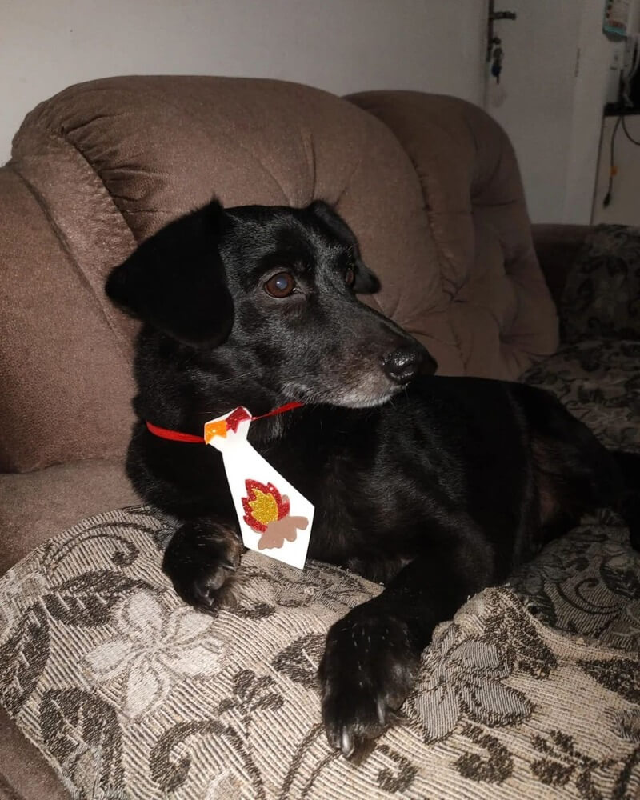
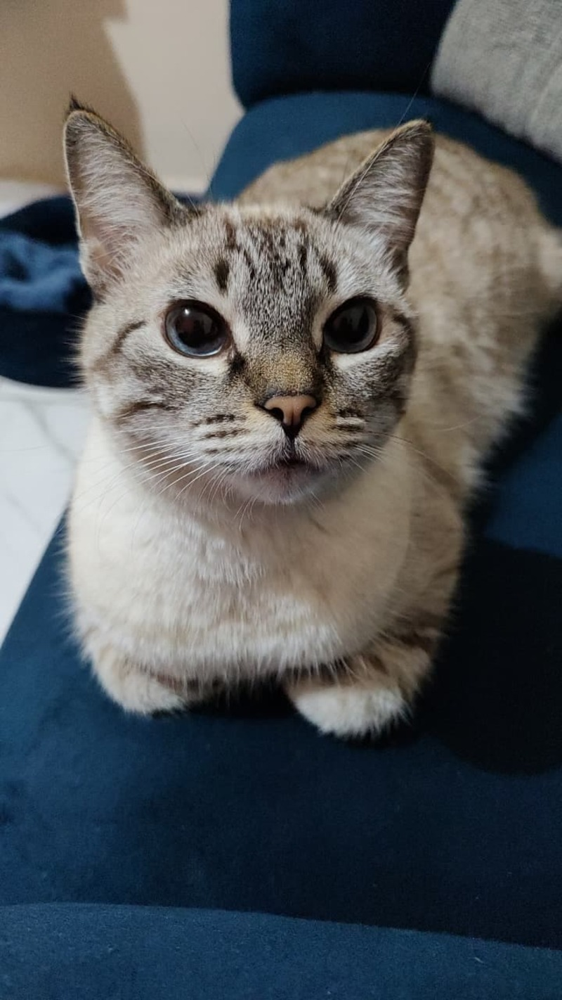

Conheça as principais ações da Patas Solidárias para garantir o bem-estar animal na nossa comunidade.
Projeto 1: Adoção Responsável
Nosso programa essencial de reabilitação e busca por lares definitivos. Cerca de 80% dos nossos recursos são dedicados a este **projeto.**
Negão: Do Resgate à Família Feliz

Negão, adotado ainda filhote, hoje é a alegria de sua família.
Negão foi resgatado em uma situação de extrema vulnerabilidade. Encontrado acorrentado, sofrendo com bicheiras e desnutrição, ele recebeu cuidados veterinários intensivos e passou por uma longa reabilitação física e emocional em nosso abrigo. Sua história é um símbolo da luta contra os maus-tratos. Hoje, ele é um cachorro saudável, brincalhão e o membro mais amado de sua nova família, provando que o amor transforma qualquer sofrimento.

Nino, o gatinho mais novo a ser adotado pela Patas Solidárias.
Nino chegou ao nosso abrigo com apenas semanas de vida, precisando de cuidados especiais. Foi alimentado por sonda e, com muito carinho da nossa equipe, se recuperou rapidamente. Ele foi adotado por uma família e hoje é o companheiro mais amado da casa.